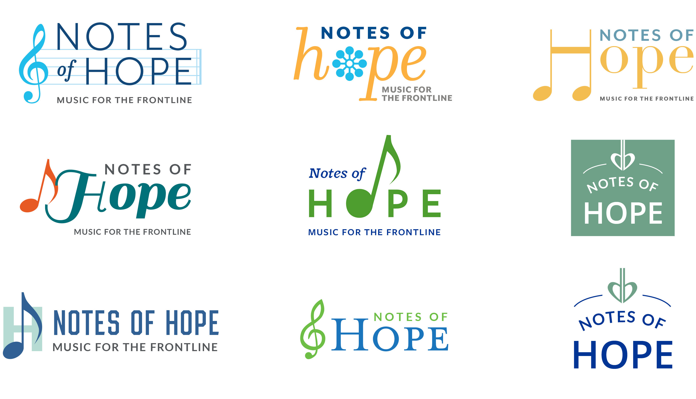
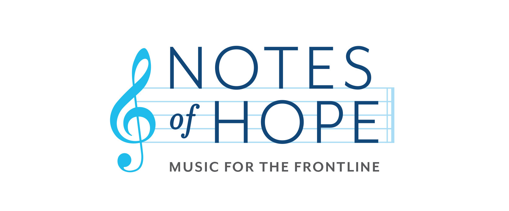

Notes of Hope
Problem
During COVID-19, a Boston-based nonprofit of classical musicians streamed daily performances to thank frontline workers — but the project lacked a clear visual identity. They needed a logo that could communicate hope and gratitude in a time of uncertainty while working across livestreams, social media, and digital promotions.
"Music became a way to say thank you when words weren’t enough."— Project mission statement
Logo Exploration
Early concepts explored different ways to visualize music, connection, and hope before refining the final direction.

Solutions
I designed a logo and visual identity that translated the project’s mission into a simple, recognizable mark.
The system was built to feel warm, uplifting, and accessible, while remaining flexible enough for daily digital use.

"Exploring multiple concepts helped narrow down the strongest direction."— Project reflection
Outcome + Takeaways
The final logo gave Notes of Hope a clear and recognizable identity for promoting performances during COVID-19.
Working through multiple directions helped clarify what resonated most with the client and ensured the final mark reflected the spirit of the project.
Showing Options Builds Trust
Presenting several directions made it easier for the client to articulate what they connected with and feel confident in the final choice.
Constraints Shape Good Design
Designing primarily for digital use meant the logo had to stay clear and legible at small sizes, which pushed the design toward a simpler and stronger solution.